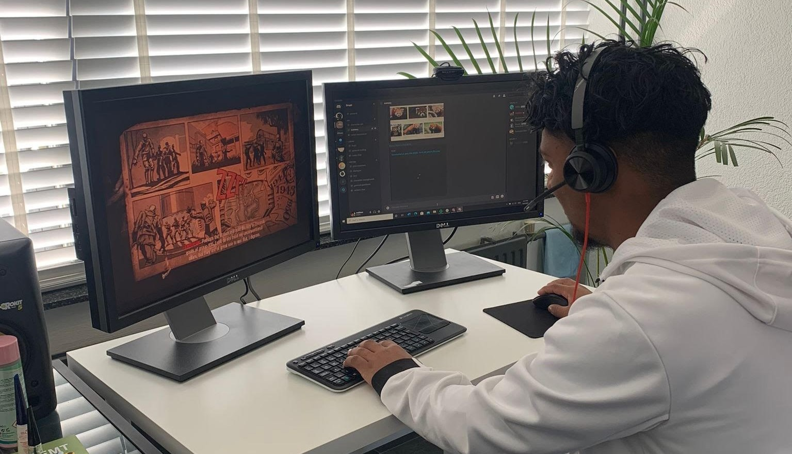

Mijn motivatie
Ik ben begonnen met voetballen toen ik 4 jaar oud was en heb gevoetbald tot mijn 15e.
Ik speelde bij SVL voor 3 jaar. Ik heb in de JO17-2, JO15-2, JO15-4 en in de JO13-2 gezeten.
Naast voetbal is gamen ook een grote hobby van mij. Zo ben ik ook nieuwsgierig geworden naar hoe games
eigenlijk gemaakt worden.
Het lijkt me heel leuk om mijn eigen games te kunnen bouwen en van mijn hobby's mijn werk te maken. Ik ben
buiten voetbal ook opgegroeid met simulatie games en first person shooters.
In de 3e klas moest ik een werkstuk maken over een vervolgopleiding die ik zou willen doen. Daarvoor heb ik
mensen uit de gamewereld geïnterviewd. Dit vond ik zo leuk dat ik daarom op de opleiding Game Developer ben
gekomen.
